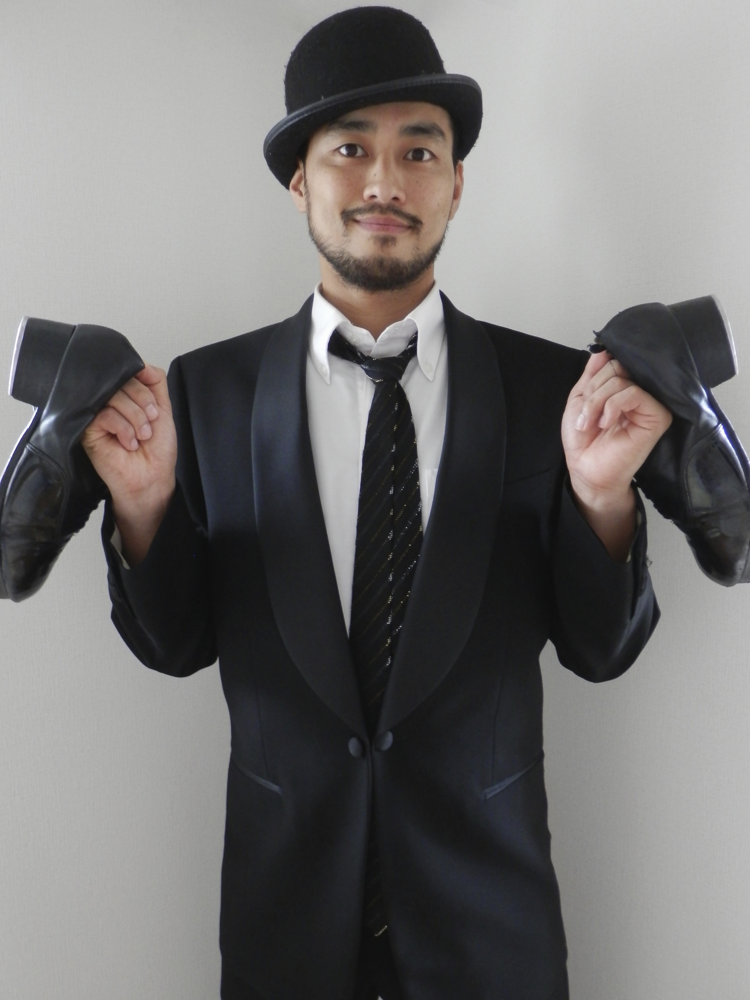
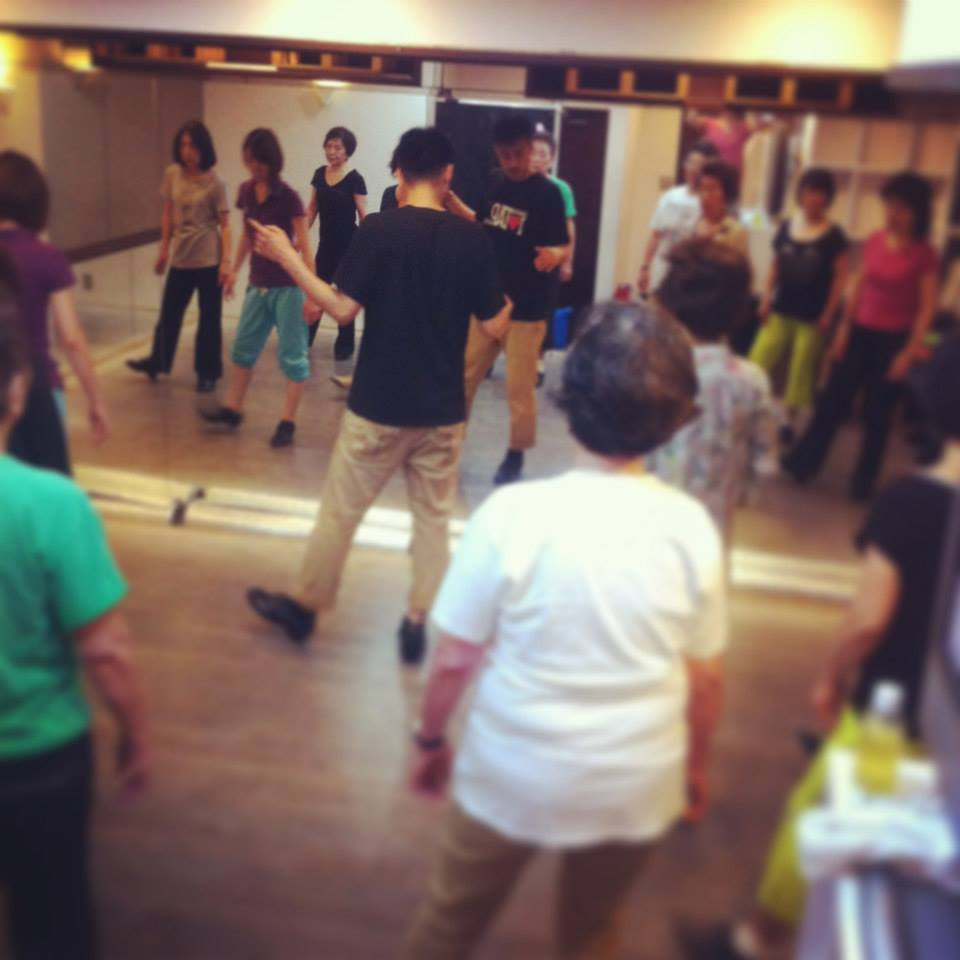
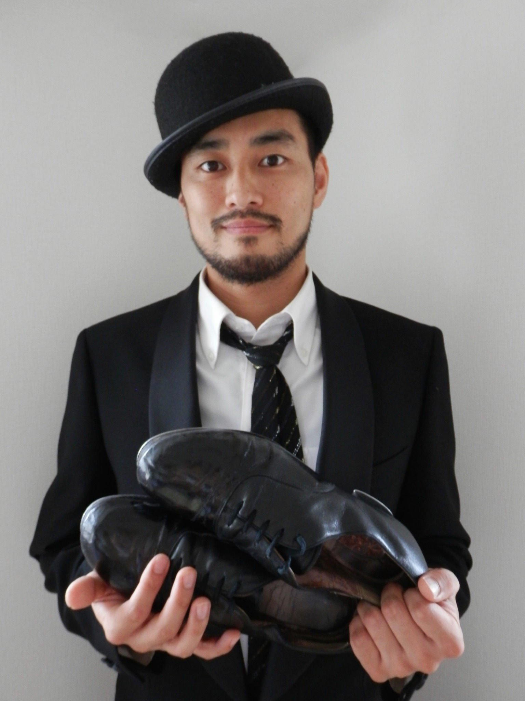

タップダンスレッスン・ワークショップ
個人・団体向けのレッスン、体験、外部ワークショップのご相談。
メールで相談 →TAP DANCER · CHOREOGRAPHER · INSTRUCTOR
Artist / Educator / Creator / Professional
東京都・池袋を拠点に活動するタップダンサー、インストラクター、振付家。リズムスピーカー代表、日本タップダンス協会 理事。

START HERE
仕事のご相談、レッスン・スタジオ利用、活動のご紹介。
SELECTED WORKS
映画、CM、音楽作品などから、現在公開できる代表実績を選んで紹介します。
WORK WITH FURUSHO
レッスン、講師、スタジオ運営、音楽制作。出演・振付などのご相談もContactへ。

個人・団体向けのレッスン、体験、外部ワークショップのご相談。
メールで相談 →指導内容や講師・インストラクターに関するご相談。
メールで相談 →スタジオ運営の課題整理や、続けられる仕組みづくりのご相談。
メールで相談 →楽曲・音源制作に関するご相談。
メールで相談 →STUDIO SERVICE
Rhythm Speakerの通常レッスン・スタジオ利用はスタジオ側へ。STATEMENT
タップダンスを、
踊る技術から、
学び・表現・つながりの文化へ。
CURRENT WORK
指導の現場から、タップダンスの楽しみ方を広げる制作活動まで。
EDUCATION
池袋「リズムスピーカー」を拠点に、指導と継続して学べる環境づくりに取り組んでいます。
教室について見る →CREATION
タップダンスカードゲームを通じ、ステップや文化に触れる機会を広げています。
制作プロジェクトを見る →PROJECTS
タップダンスを中心に、教育、メディア、コミュニティ、制作へ活動領域を広げています。
ABOUT

10歳の頃、サミー・デイヴィスJr.に憧れてタップダンスを始める。映画・CM・MV・コンサート・海外公演など幅広い現場で活動し、現在は初心者から経験者まで幅広く指導している。
基礎技術だけでなく、リズム・身体操作・表現を総合的に育てながら、タップダンス文化の継承と発信に取り組んでいる。
CONTACT
企業・法人・制作会社・学校・施設等からの正式な仕事依頼はメールを推奨しています。個人からの簡単な相談や、LINEを使いたい方は公式LINEも利用できます。